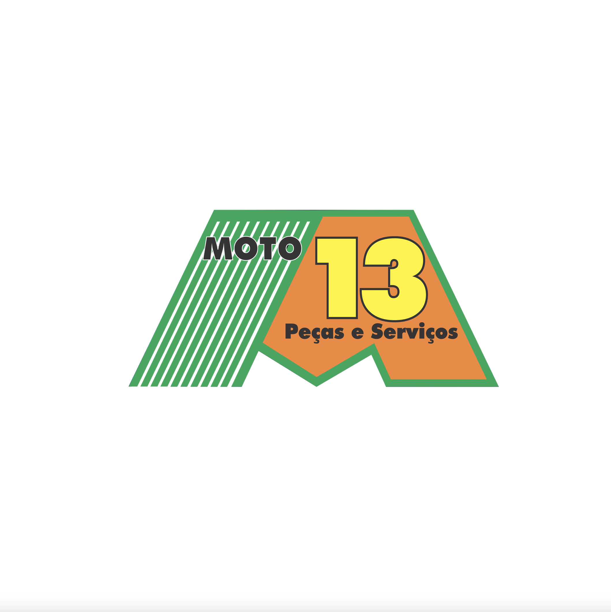

Departamento Pessoal
Equipe especializada em admissão, demissão, folha de pagamento, férias, benefícios, cartão ponto e legislação trabalhista, inclusive eSocial.
Falar sobre DP →Assessoria completa para empresas industriais, comerciais, de serviços e do setor rural. Orientação contábil, trabalhista, fiscal, IRPF, IRPJ, abertura e encerramento de empresas.
Equipe especializada em admissão, demissão, folha de pagamento, férias, benefícios, cartão ponto e legislação trabalhista, inclusive eSocial.
Falar sobre DP →Escrituração das movimentações, análise e encaminhamento de guias de impostos, com foco em segurança tributária.
Falar sobre Fiscal →Gestão de informações qualitativas e quantitativas. Base para a saúde financeira e operacional da empresa.
Falar sobre Admin →Balanço patrimonial, balancetes, fluxo de caixa, escrituração, demonstrativos e imposto de renda anual.
Falar sobre Contábil →Foco em patrimônio rural, fluxo de caixa, empréstimos bancários, fazendas e agronegócios.
Falar sobre Rural →A Astecon foi criada em 01/03/1986 pelo Técnico Contábil Rudel Sanches Silva (CRC 2020-MS). Hoje divide a administração com sua filha contadora Natália e mantém o propósito de assessorar e organizar empresas de todas as atividades.
Transmitimos confiança e lisura no cálculo das obrigações, dando tranquilidade aos clientes.
Prestação de serviço de qualidade. Controles e planejamentos tributários conforme a legislação, facilitando a rotina do cliente.
Ser referência em prestações de serviço personalizadas e diferenciadas para cada cliente.
Ética profissional, segurança tributária, organização, comprometimento, responsabilidade, humanização e transparência.
Algumas das empresas que confiam na Astecon.

Moto 13Telefone
(67) 3384-5075
WhatsApp
(67) 99845-0219
E-mail
asteconms@terra.com.br
Endereço
Rua Paissandú, Nº 136
Campo Grande - MS
Instagram
@asteconms